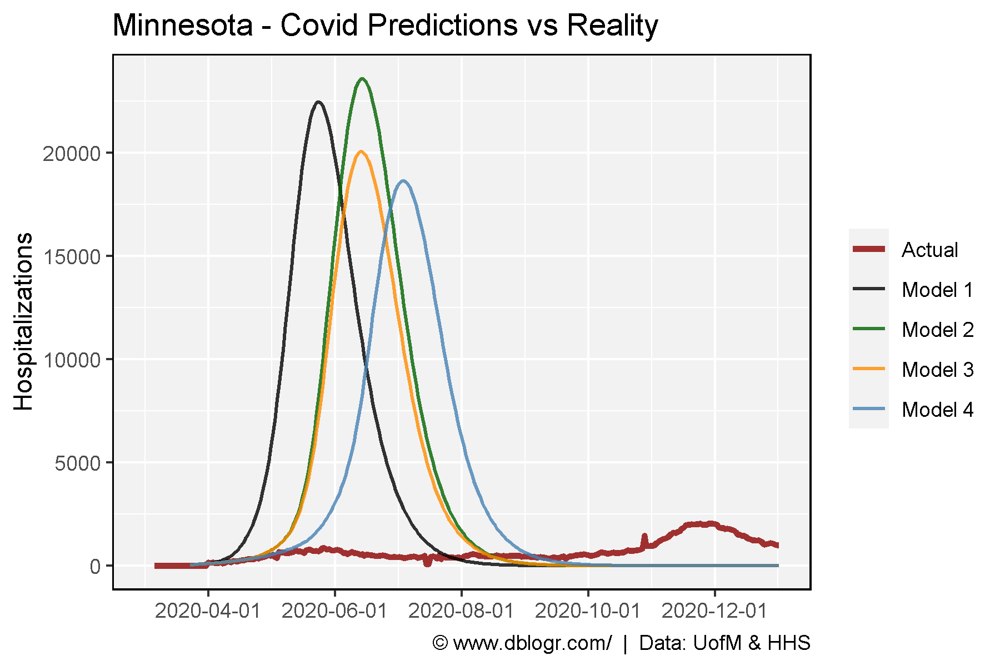
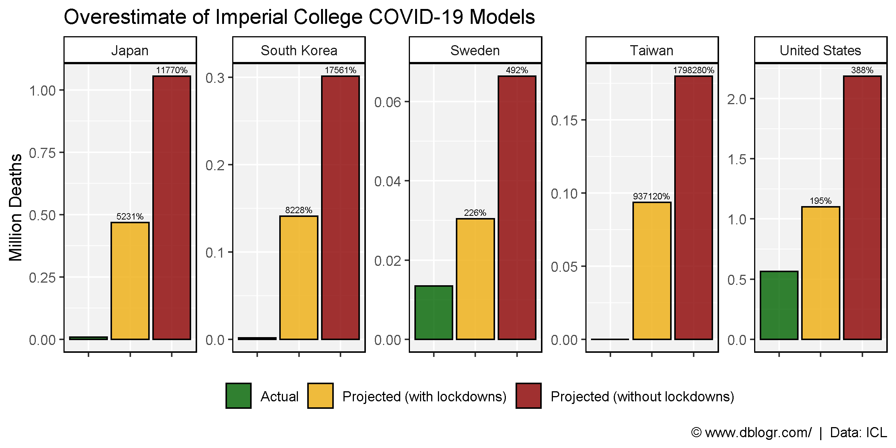

USA Covid Data
Minnesota Models
https://github.com/MN-COVID19-Model/Model_v3
Imperial Models
https://www.aier.org/article/the-failure-of-imperial-college-modeling-is-far-worse-than-we-knew/
https://github.com/mrc-ide/covid-sim
# devtools::install_github("derekmichaelwright/agData")
library(agData) # Loads: tidyverse, ggpubr, ggbeeswarm, ggrepel
# Prep data
models <- c("Model 1", "Model 2", "Model 3", "Model 4")
colors <- c("darkred", "black", "darkgreen", "darkorange", "steelblue")
x1 <- read.csv("models_minnesota.csv") %>%
rename(Hospitalizations=prevalent_hospitalizations,
Data=strategy) %>%
mutate(Data = plyr::mapvalues(Data, 1:4, models),
Date = as.Date("2020-03-22") + t)
x2 <- read.csv("covid_usa.csv") %>%
filter(state == "MN") %>%
rename(Date=date,
Hospitalizations=inpatient_bed_covid_utilization_numerator) %>%
mutate(Data = "Actual",
Date = as.Date(Date))
d1 <- bind_rows(x1, x2)
#
x1 <- read.csv("models_imperial.csv") %>%
select(Area=1, `Projected (with lockdowns)`=2, `Projected (without lockdowns)`=3, Actual=4) %>%
gather(Trait, Value, 2:4) %>%
mutate(Value = as.numeric(gsub(",", "", Value)))
x2 <- read.csv("models_imperial.csv") %>%
select(Area=1, `Projected (with lockdowns)`=7, `Projected (without lockdowns)`=8) %>%
gather(Trait, OverEstimate, 2:3)
d2 <- left_join(x1, x2, by = c("Area","Trait"))# Plot
mp <- ggplot(d1, aes(x = Date, y = Hospitalizations, color = Data, size = Data)) +
geom_line(alpha = 0.8) +
scale_x_date(breaks = "2 month", limits = as.Date(c("2020-03-01","2021-01-01"))) +
scale_size_manual(name = NULL, values = c(1.25,0.75,0.75,0.75,0.75)) +
scale_color_manual(name = NULL, values = colors) +
theme_agData() +
labs(title = "Minnesota - Covid Predictions vs Reality", x = NULL,
caption = "\xa9 www.dblogr.com/ | Data: UofM & HHS")
ggsave("covid_models_01.png", mp, width = 6, height = 4)
# Plot
mp <- ggplot(d2, aes(x = Trait, y = Value / 1000000, fill = Trait)) +
geom_bar(stat = "identity", color = "black", alpha = 0.8) +
geom_text(aes(label = OverEstimate), size = 2, vjust = -0.5) +
facet_wrap(Area ~ ., ncol = 5, scales = "free_y") +
scale_fill_manual(name = NULL, values = agData_Colors) +
theme_agData(legend.position = "bottom",
axis.text.x = element_blank()) +
labs(title = "Overestimate of Imperial College COVID-19 Models",
y = "Million Deaths", x = NULL,
caption = "\xa9 www.dblogr.com/ | Data: ICL")
ggsave("covid_models_02.png", mp, width = 8, height = 4)
© Derek Michael Wright www.dblogr.com/